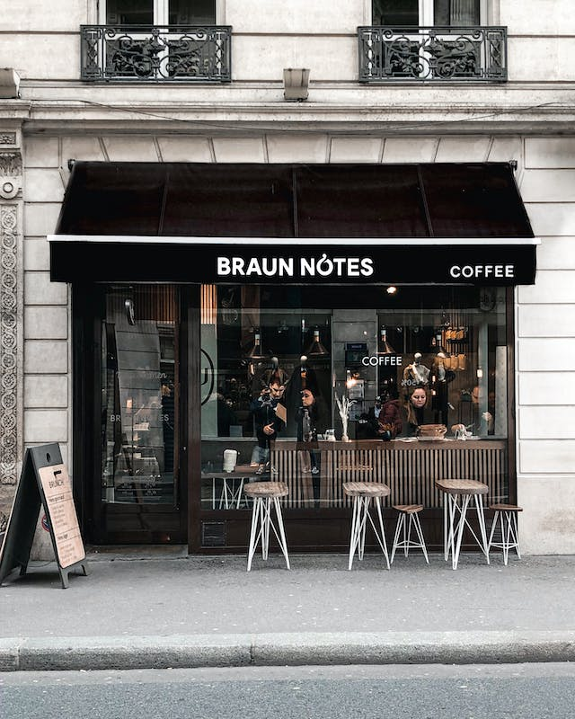
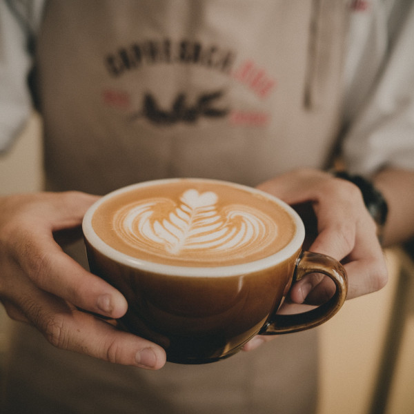
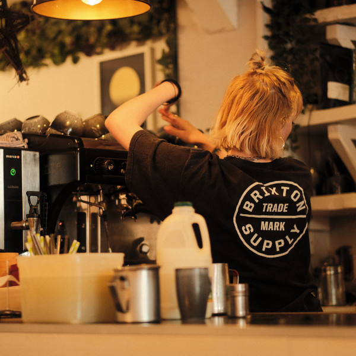
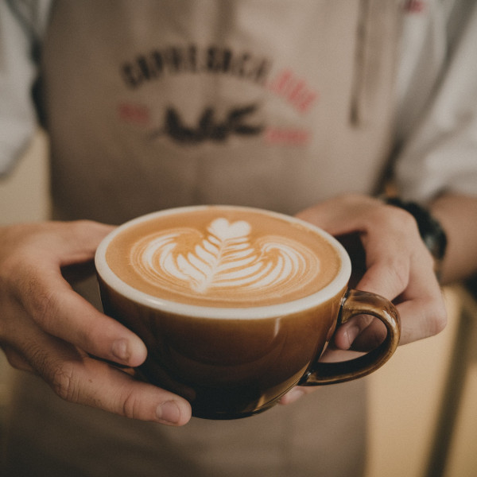
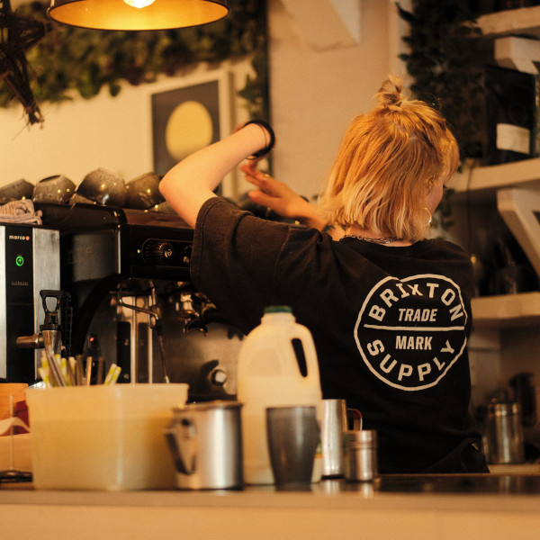

Sobre Nós
Se você está atrás de um dos brunches mais instagramáveis de Paris, definitivamente dê uma olhada no Braun Notes Coffee. Localizado no 9º arrondissement de Paris, a poucos passos de Saint Lazare, este restaurante de decoração elegante e sóbria é o favorito de todo turista.
Encontre o brunch do Braun Notes Coffee.

 


